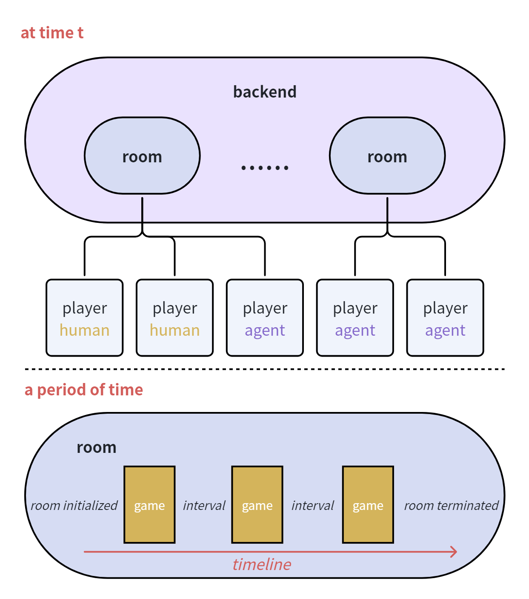
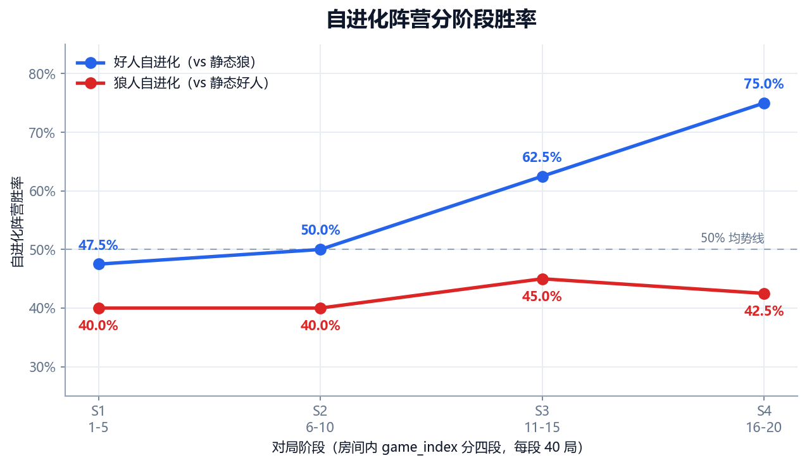
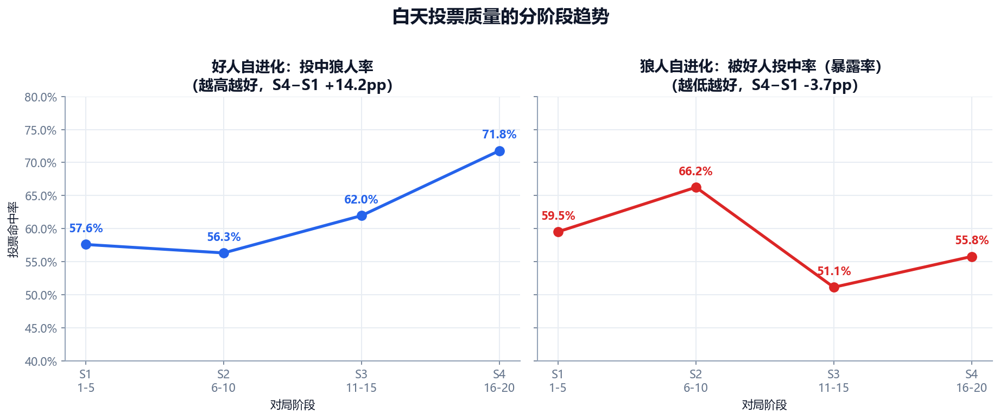
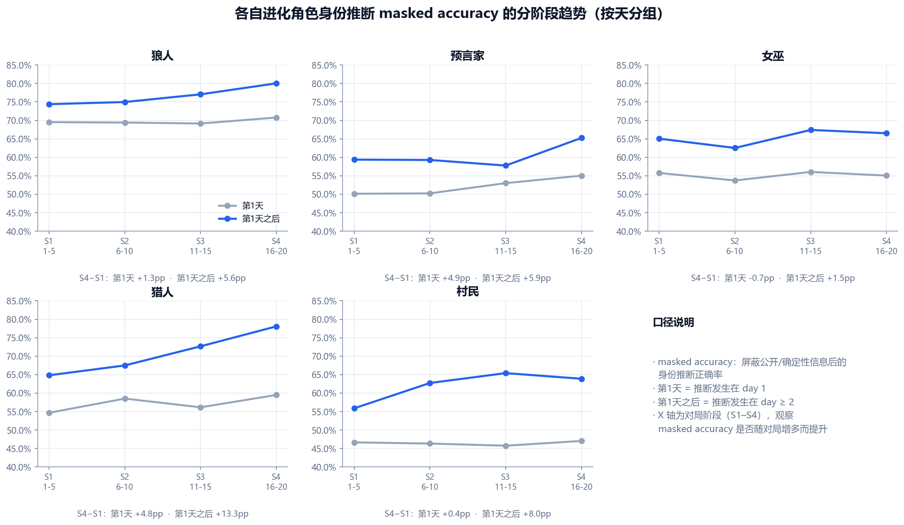
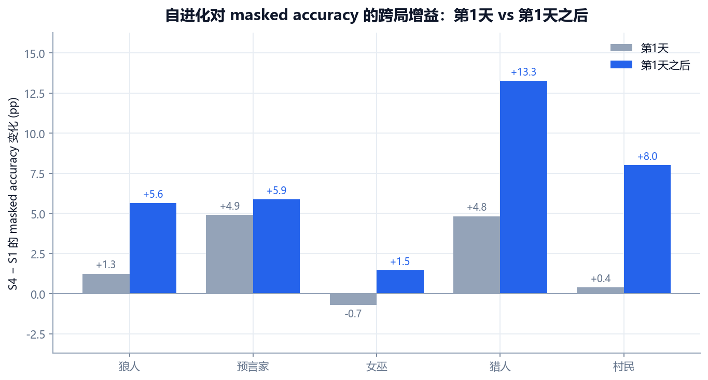
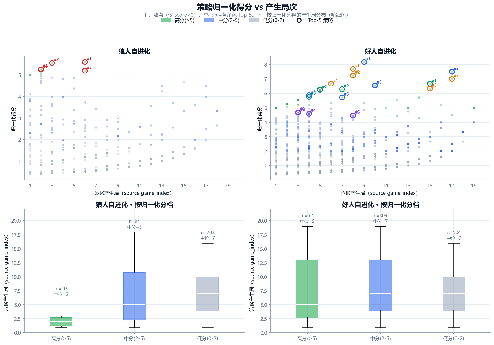

不完全信息
每个 Agent 只能看到身份允许的信息，推理与决策必须在隔离上下文中进行。
狼人杀天然适合检验 Agent Team：多角色、信息不对称、既要协作又要博弈。 我们关心的不只是「让模型会玩」，而是能否在工程上跑通完整闭环，并量化自进化是否有效。
每个 Agent 只能看到身份允许的信息，推理与决策必须在隔离上下文中进行。
狼人、神职、村民策略差异大，需要统一的 Agent 框架 + 可切换 profile。
关键决策可追踪、可复盘；跨局记忆能否转化为胜率与推理质量提升。
我们把系统拆成三个边界清晰的模块，避免把规则、决策和实验编排耦合成一团。

权威规则引擎 + 服务端视角裁剪 + 回放持久化。不关心玩家是真人还是 LLM。
按 profile 执行 belief → strategy → decision → postgame review，维护 room-scoped 策略记忆。
多房间并行、多局串行、summary 与 LLM trace；只编排，不代理局内 pending action。
从 MVP 到可批量实验、可复盘、可自进化的完整链路。
两个实验各 8 房间 × 20 局（160 局），考察同一房间内跨局学习的效果。 分阶段口径：S1=1–5 局、S2=6–10、S3=11–15、S4=16–20。





三句话结论
① 好人自进化有效：胜率、投票、中后期推断三条证据链一致。
② 狼人自进化收益有限：伪装略好，但难以转化为胜率。
③ 记忆复用主要在信息更丰富的中后期发挥作用，而非开局首日。
将录屏放到 docs/report/assets/videos/demo.mp4 后，取消下方注释即可播放。
演示视频占位
建议内容：游戏观战、实验控制台批量跑局、replay 与 LLM trace。
本地体验：docker compose --env-file .env up -d --build 后访问游戏工作台
http://127.0.0.1:8080 与实验控制台 http://127.0.0.1:5174。